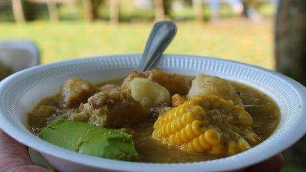

Sancocho

Description
Sancocho is a hearty, thick stew that is considered the ultimate Dominican comfort food. While there are many variations, the most famous is the "Sancocho de Siete Carnes" (Seven Meat Stew). It combines various meats with root vegetables like yuca, yautía, and pumpkin (auyama). It is usually prepared for large family gatherings, celebrations, or on rainy days.
Ingredients
- 2 lbs of mixed meats (pork chops, beef chuck, chicken, smoked ribs)
- 1 lb of yuca (cassava), cut into chunks
- 1 lb of auyama (squash/pumpkin), cut into chunks
- 2 corn cobs, sliced
- 1 tbsp of sour orange juice (naranja agria)
- Cilantro and oregano
Steps
- Cut the meats into small pieces and marinate with sour orange, oregano, garlic, and salt.
- Brown the meat in a large pot with oil. Add water to cover the meat and simmer until it starts to soften.
- Add the root vegetables (yuca, yautía) and the corn. Add more water if necessary to cover everything.
- Add the pumpkin (auyama). As the pumpkin cooks and dissolves, it will thicken the stew naturally.
- Simmer everything until the broth is thick and all ingredients are tender. Serve with white rice and avocado.